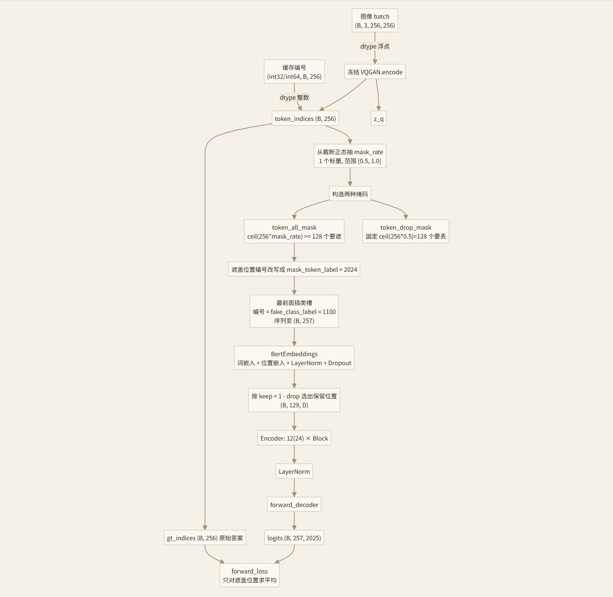
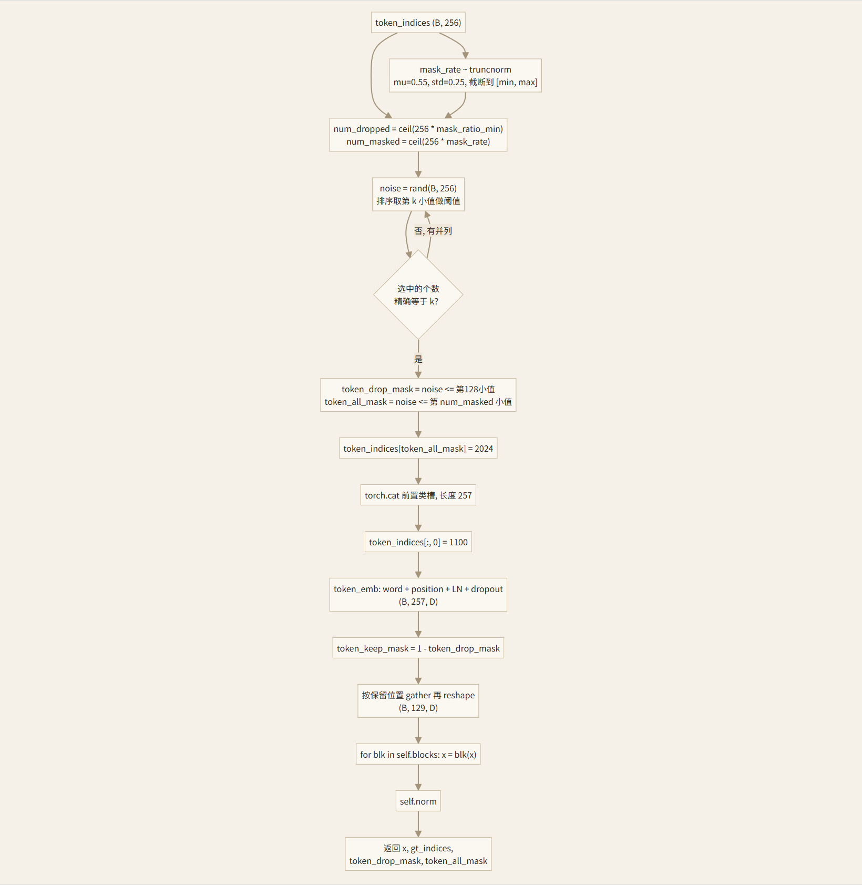
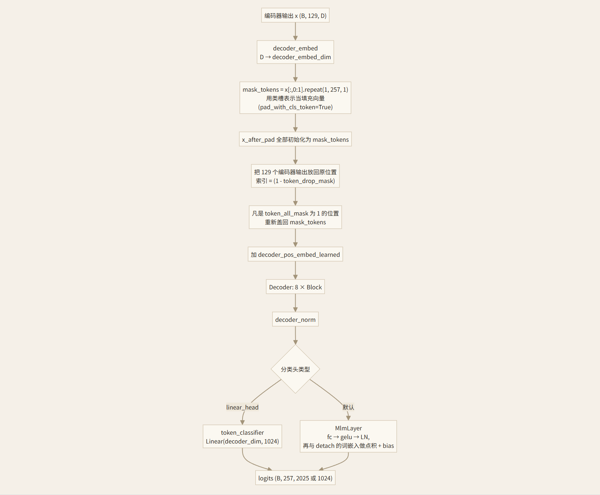
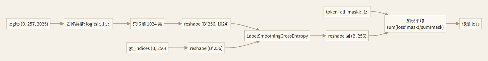
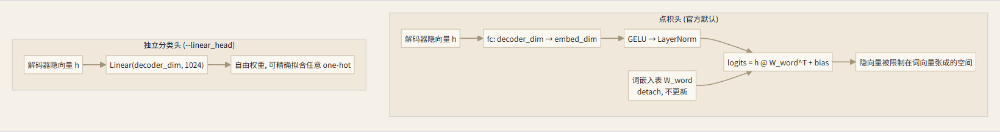
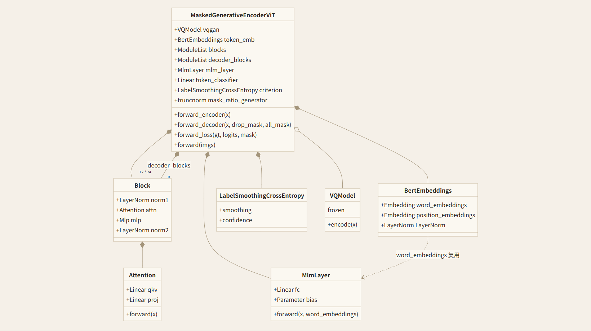
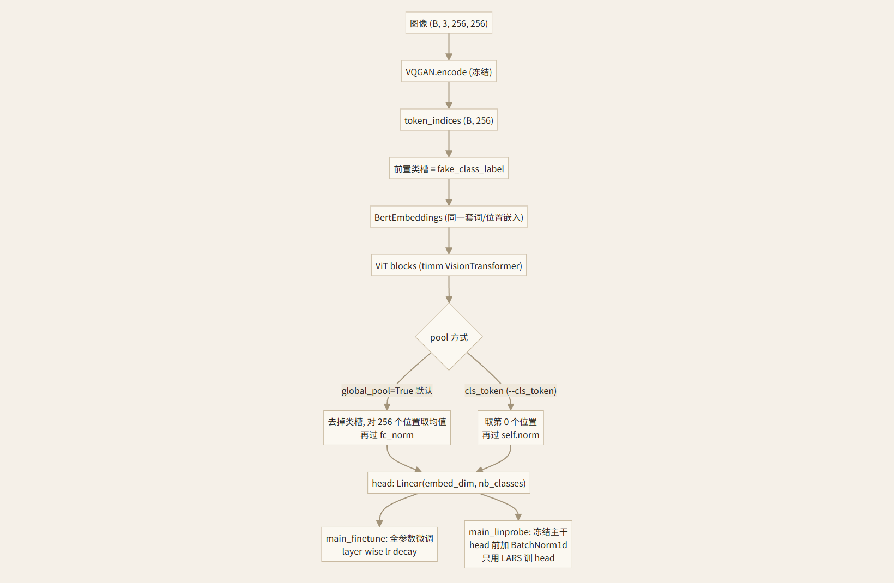
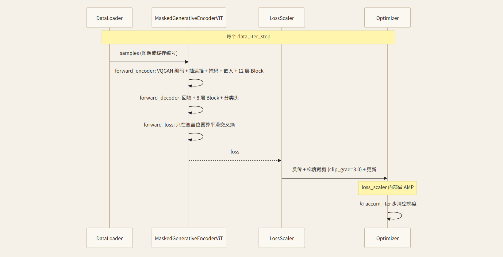
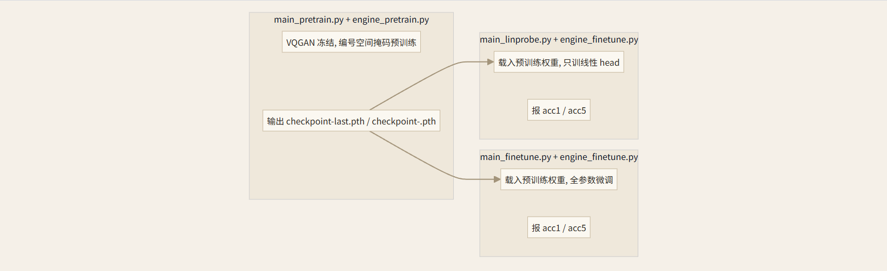

01
模型概览：它在做什么
整张图先被冻结的 VQGAN 编码成 16×16=256 个编号，编号取值范围 0..1023。模型在这 256 个编号上做类似 BERT 的掩码预测：盖住一部分位置，让编码器只看剩下的一半，再让解码器把被盖住的位置猜回原来的编号。像素层面它一行都不碰，全部在编号空间里做。
图像 →（VQGAN）→ 256 编号 → 随机遮盖 → 编码器 → 解码器 → 每个位置的 1024 类 logits → 交叉熵
021–13 行
依赖与导入
代码 01
from timm.models.vision_transformer import PatchEmbed, DropPath, Mlp from util.pos_embed import get_2d_sincos_pos_embed from taming.models.vqgan import VQModel from omegaconf import OmegaConf import numpy as np import scipy.stats as stats
- 第 6 行从 timm 借了三个现成件：
PatchEmbed（16×16 卷积切块）、DropPath（随机深度）、Mlp（Transformer 里的前馈层）。 - 第 8 行是正弦余弦位置编码，
util/pos_embed.py里生成。 - 第 10–11 行引入本地 VQGAN，配置用 OmegaConf 从
config/vqgan.yaml读。 - 第 13 行
scipy.stats用来抽截断正态的遮挡比例，这是 MAGE 相对 MAE 的关键变动之一。
0316–44 行
Attention
代码 02
def __init__(self, dim, num_heads=8, qkv_bias=False, qk_scale=None, attn_drop=0., proj_drop=0.): self.num_heads = num_heads head_dim = dim // num_heads self.scale = qk_scale or head_dim ** -0.5 self.qkv = nn.Linear(dim, dim * 3, bias=qkv_bias) self.attn_drop = nn.Dropout(attn_drop) self.proj = nn.Linear(dim, dim) self.proj_drop = nn.Dropout(proj_drop)
- 第 20 行每个头分到
dim/num_heads维。 - 第 22 行缩放系数默认
1/sqrt(head_dim)，是标准注意力。 - 第 24 行用一个线性层一次性算出 Q、K、V，输出维度是
3*dim。 - 第 26 行输出投影，把多头结果拼回
dim。
代码 03
def forward(self, x): B, N, C = x.shape qkv = self.qkv(x).reshape(B, N, 3, self.num_heads, C // self.num_heads).permute(2, 0, 3, 1, 4) q, k, v = qkv[0], qkv[1], qkv[2] with torch.cuda.amp.autocast(enabled=False): attn = (q.float() @ k.float().transpose(-2, -1)) * self.scale attn = attn - torch.max(attn, dim=-1, keepdim=True)[0] attn = attn.softmax(dim=-1) attn = self.attn_drop(attn) x = (attn @ v).transpose(1, 2).reshape(B, N, C) x = self.proj(x) x = self.proj_drop(x) return x, attn
- 第 31 行把
(B,N,3C)拆成(3,B,heads,N,head_dim)，permute(2,0,3,1,4)就是把 3 提到最前，方便按行取 q/k/v。 - 第 34–35 行是这段代码的特别之处：注意力分数强制用 float32 算，屏蔽掉 AMP 的半精度。这样做的原因是长序列加半精度时
q·k容易溢出。 - 第 37 行先减去每行的最大值再 softmax。PyTorch 的 softmax 内部本来就减最大值，这里预减一次是为了让第 38 行的输入幅度更可控，配合半精度更安全。
- 第 41 行把各头拼回去，
transpose(1,2)把 heads 维和 N 维换回来，再 reshape 成(B,N,C)。 - 返回的不只是结果，还有注意力矩阵
attn（第 44 行）。Block里默认丢掉它，只有要可视化注意力时才取。
0447–69 行
Block
代码 04
def __init__(self, dim, num_heads, mlp_ratio=4., qkv_bias=False, qk_scale=None, drop=0., attn_drop=0., drop_path=0., act_layer=nn.GELU, norm_layer=nn.LayerNorm): self.norm1 = norm_layer(dim) self.attn = Attention(dim, num_heads=num_heads, qkv_bias=qkv_bias, qk_scale=qk_scale, attn_drop=attn_drop, proj_drop=drop) self.drop_path = DropPath(drop_path) if drop_path > 0. else nn.Identity() self.norm2 = norm_layer(dim) mlp_hidden_dim = int(dim * mlp_ratio) self.mlp = Mlp(in_features=dim, hidden_features=mlp_hidden_dim, act_layer=act_layer, drop=drop)
标准 pre-norm Transformer 块。norm1 在注意力前，norm2 在前馈前。drop_path 为 0 时退化成恒等映射（第 56 行）。
代码 05
def forward(self, x, return_attention=False): if return_attention: _, attn = self.attn(self.norm1(x)) return attn else: y, _ = self.attn(self.norm1(x)) x = x + self.drop_path(y) x = x + self.drop_path(self.mlp(self.norm2(x))) return x
- 第 62–64 行的分支只给可视化用：只跑注意力并把矩阵返回，不改
x。 - 第 66–68 行是残差结构：注意力输出加回
x，再过 MLP 加回x。norm2加在 MLP 前，而非残差相加之后。
0572–87 行
LabelSmoothingCrossEntropy
代码 06
def forward(self, x, target): logprobs = torch.nn.functional.log_softmax(x, dim=-1) nll_loss = -logprobs.gather(dim=-1, index=target.unsqueeze(1)) nll_loss = nll_loss.squeeze(1) smooth_loss = -logprobs.mean(dim=-1) loss = self.confidence * nll_loss + self.smoothing * smooth_loss return loss
- 第 82 行取 log 概率。
- 第 83–84 行取出正确答案那一列，取负号就是普通交叉熵。
gather配合target.unsqueeze(1)是为了按索引取值。 - 第 85 行
smooth_loss是所有类别的平均负 log 概率，代表「均匀猜」的损失。 - 第 86 行按
1-smoothing和smoothing加权混合。默认smoothing=0.1，也就是把正确答案只看成 90% 置信。这就是 README 里反复提到的标签平滑，改--label_smoothing 0就退回精确交叉熵。
0690–124 行
BertEmbeddings
这是 MAGE 把图像编号当「词」喂给 Transformer 的入口。
代码 07
def __init__(self, vocab_size, hidden_size, max_position_embeddings, dropout=0.1): self.word_embeddings = nn.Embedding(vocab_size, hidden_size) self.position_embeddings = nn.Embedding(max_position_embeddings, hidden_size) self.LayerNorm = nn.LayerNorm(hidden_size, eps=1e-6) self.dropout = nn.Dropout(dropout) self.register_buffer("position_ids", torch.arange(max_position_embeddings).expand((1, -1))) torch.nn.init.normal_(self.word_embeddings.weight, std=.02) torch.nn.init.normal_(self.position_embeddings.weight, std=.02)
- 第 95 行词嵌入表，行数就是词表大小（本文件里是 2025），列数是隐层维度。
- 第 96 行位置嵌入表，可学习，最多 257 个位置（256 个图块 + 1 个类槽）。
- 第 100 行 LayerNorm。第 103 行把位置 id 注册成 buffer，不受梯度影响、跟随模型到处走。
- 第 105–106 行把两张表都按
std=0.02初始化。
代码 08
def forward(self, input_ids): input_shape = input_ids.size() seq_length = input_shape[1] position_ids = self.position_ids[:, :seq_length] inputs_embeds = self.word_embeddings(input_ids) position_embeddings = self.position_embeddings(position_ids) embeddings = inputs_embeds + position_embeddings embeddings = self.LayerNorm(embeddings) embeddings = self.dropout(embeddings) return embeddings
- 第 115 行按当前序列长度截取位置 id。
- 第 117–120 行查表相加，词嵌入叠位置嵌入。
- 第 122–123 行归一化加 dropout。这里的位置信息是学出来的，和后面那个正弦余弦
pos_embed是两码事，后者其实没被用到。
07127–143 行
MlmLayer：点积分类头
代码 09
def __init__(self, feat_emb_dim, word_emb_dim, vocab_size): self.fc = nn.Linear(feat_emb_dim, word_emb_dim) self.gelu = nn.GELU() self.ln = nn.LayerNorm(word_emb_dim) self.bias = nn.Parameter(torch.zeros(1, 1, vocab_size)) def forward(self, x, word_embeddings): mlm_hidden = self.fc(x) mlm_hidden = self.gelu(mlm_hidden) mlm_hidden = self.ln(mlm_hidden) word_embeddings = word_embeddings.transpose(0, 1) logits = torch.matmul(mlm_hidden, word_embeddings) logits = logits + self.bias return logits
这是 README 表格里那一列「点积」的官方实现。
- 第 137–139 行把解码器输出投影到词向量维度，过 GELU 再 LayerNorm。
- 第 140 行把词表转成
(word_emb_dim, vocab_size)，这里的word_embeddings是从外面传进来的、并且已经detach（见第 363 行）。 - 第 141 行用点积得到每个词的分数。隐向量和词表向量做内积，谁方向最接近谁的分数就最高。
- 第 134/142 行是一个偏置项，初始化为 0，形状是每个词一个标量。
分类权重就是词嵌入表本身。隐向量被迫落在词向量张成的空间里，这正是 README 4.1 节说的「隐向量被限制在词向量空间」，也是「换相近小块」现象的机制来源。
08146–233 行
MaskedGenerativeEncoderViT.__init__
构造函数比较长，拆开看。
VQGAN 部分 158–170 行
代码 10
config = OmegaConf.load('config/vqgan.yaml').model self.vqgan = VQModel(ddconfig=config.params.ddconfig, n_embed=config.params.n_embed, embed_dim=config.params.embed_dim, ckpt_path=vqgan_ckpt_path) for param in self.vqgan.parameters(): param.requires_grad = False self.codebook_size = config.params.n_embed vocab_size = self.codebook_size + 1000 + 1 self.fake_class_label = self.codebook_size + 1100 - 1024 self.mask_token_label = vocab_size - 1
- 第 160–164 行读配置并实例化 VQGAN，权重从
vqgan_ckpt_path加载。 - 第 165–166 行把 VQGAN 全部参数冻结。它只在训练里当编码器用，不参与更新。
- 第 168 行
codebook_size就是词表大小 1024，也就是一张图的编号取值范围。 - 第 169 行
vocab_size = 1024 + 1000 + 1 = 2025。多出来的 1000 是给分类任务用的类别编号，最后 1 个是 mask 专用的编号。这说明 MAGE 是「生成 + 分类」的混合模型。 - 第 170 行
fake_class_label = 1024 + 1100 - 1024 = 1100。它是放在序列第 0 位的一个占位编号，用来当 BERT 里的[CLS]。它的 id 落在类别编号区间里，和真实的 0..1023 编号不会撞车，它对应的那一行嵌入是可学习的。 - 第 171 行
mask_token_label = 2024，遮盖位置用它替换。
位置嵌入与遮挡分布 172–181 行
代码 11
self.token_emb = BertEmbeddings(vocab_size=vocab_size, hidden_size=embed_dim, max_position_embeddings=256+1, dropout=0.1) self.mask_ratio_min = mask_ratio_min self.mask_ratio_generator = stats.truncnorm((mask_ratio_min - mask_ratio_mu) / mask_ratio_std, (mask_ratio_max - mask_ratio_mu) / mask_ratio_std, loc=mask_ratio_mu, scale=mask_ratio_std)
- 第 172–175 行就是上面那个 BERT 嵌入，词表 2025，隐层
embed_dim，位置数 257。 - 第 179–181 行构造一个截断正态分布，取值被限制在
[mask_ratio_min, mask_ratio_max]。scipy 的truncnorm要求先把上下界标准化成(a,b)，所以前面减均值除标准差。默认均值 0.55、标准差 0.25、下界 0.5、上界 1.0。每次前向会从这个分布抽一个标量当这次的遮挡比例。这是 MAGE 和 MAE（固定 75%）最大的不同，也是 README 4.4 节「0.5-1 对 0-1」要改的地方。
编码器 184–196 行
代码 12
dropout_rate = 0.1 self.patch_embed = PatchEmbed(img_size, patch_size, in_chans, embed_dim) num_patches = self.patch_embed.num_patches self.cls_token = nn.Parameter(torch.zeros(1, 1, embed_dim)) self.pos_embed = nn.Parameter(torch.zeros(1, num_patches + 1, embed_dim), requires_grad=False) self.blocks = nn.ModuleList([ Block(embed_dim, num_heads, mlp_ratio, qkv_bias=True, qk_scale=None, norm_layer=norm_layer, drop=dropout_rate, attn_drop=dropout_rate) for i in range(depth)]) self.norm = norm_layer(embed_dim)
这里要敲黑板：
patch_embed、pos_embed、和后面的 decoder_pos_embed 在真正的前向里几乎都不用。实际 token 序列来自 VQGAN 编号经 token_emb 得到的嵌入，位置信息也来自 token_emb 里可学习的位置表。它们是从 MAE 骨架继承下来的遗留结构，num_patches 只是拿来算 pos_embed 的形状用。读代码时不要被它们带偏。- 第 192–195 行按
depth堆编码器块，drop和attn_drop都设成 0.1，qkv_bias=True。 - 第 196 行最后一层 LayerNorm。
解码器 200–215 行
代码 13
self.decoder_embed = nn.Linear(embed_dim, decoder_embed_dim, bias=True) self.mask_token = nn.Parameter(torch.zeros(1, 1, decoder_embed_dim)) self.pad_with_cls_token = True self.decoder_pos_embed = nn.Parameter(torch.zeros(1, num_patches + 1, decoder_embed_dim), requires_grad=False) self.decoder_pos_embed_learned = nn.Parameter(torch.zeros(1, num_patches + 1, decoder_embed_dim)) self.decoder_blocks = nn.ModuleList([... for i in range(decoder_depth)]) self.decoder_norm = norm_layer(decoder_embed_dim) self.decoder_pred = nn.Linear(decoder_embed_dim, patch_size**2 * in_chans, bias=True)
- 第 201 行把编码器输出维度映射到解码器维度。
- 第 203 行
mask_token又是一个遗留参数，因为第 204 行pad_with_cls_token = True，实际用的是类槽的表示来填充遮住的位置，这个mask_token不会被调用。 - 第 206–207 行两套位置嵌入，固定的那套没用，实际用第 207 行可学习的
decoder_pos_embed_learned。 - 第 215 行
decoder_pred是把解码器输出变回像素块形状的分支，用来做 MAE 那种像素重建。MAGE 走的是编号分类，这条分支同样不参与前向，属于遗留。
分类头与损失 218–233 行
代码 14
self.linear_head = bool(linear_head) if self.linear_head: self.mlm_layer = None self.token_classifier = nn.Linear(decoder_embed_dim, self.codebook_size) else: self.mlm_layer = MlmLayer(feat_emb_dim=decoder_embed_dim, word_emb_dim=embed_dim, vocab_size=vocab_size) self.token_classifier = None self.norm_pix_loss = norm_pix_loss self.criterion = LabelSmoothingCrossEntropy(smoothing=label_smoothing) self.initialize_weights()
- 第 220–227 行是二选一。
linear_head=True时建一个自由的一层线性层直接映射到 1024 类；否则用上面的MlmLayer点积头。这对应 README 4.1 节表格里的两行，命令行开关就是--linear_head。 - 第 231 行把平滑系数固定进损失函数，
--label_smoothing 0.1/0就在这里生效。
09235–264 行
initialize_weights 与 _init_weights
代码 15
pos_embed = get_2d_sincos_pos_embed(self.pos_embed.shape[-1], int(self.patch_embed.num_patches**.5), cls_token=True) self.pos_embed.data.copy_(torch.from_numpy(pos_embed).float().unsqueeze(0)) decoder_pos_embed = get_2d_sincos_pos_embed(...) self.decoder_pos_embed.data.copy_(torch.from_numpy(decoder_pos_embed).float().unsqueeze(0)) w = self.patch_embed.proj.weight.data torch.nn.init.xavier_uniform_(w.view([w.shape[0], -1])) torch.nn.init.normal_(self.cls_token, std=.02) torch.nn.init.normal_(self.mask_token, std=.02) torch.nn.init.normal_(self.decoder_pos_embed_learned, std=.02) self.apply(self._init_weights)
- 第 238–242 行填充两套固定正弦余弦位置嵌入。虽然前向没用到，还是要填，因为它们是参数、会被算进模型和保存进检查点。
- 第 245–246 行把
patch_embed的卷积权重按线性层方式做 xavier 初始化。 - 第 248–251 行初始化几个零参数：
cls_token、mask_token、可学习解码器位置嵌入，都用std=0.02。 - 第 254 行
self.apply遍历所有子模块，调用_init_weights。
代码 16
def _init_weights(self, m): if isinstance(m, nn.Linear): torch.nn.init.xavier_uniform_(m.weight) if isinstance(m, nn.Linear) and m.bias is not None: nn.init.constant_(m.bias, 0) elif isinstance(m, nn.LayerNorm): nn.init.constant_(m.bias, 0) nn.init.constant_(m.weight, 1.0)
- 线性层用 xavier，偏置清零。
- LayerNorm 的缩放设 1、偏移设 0。
- 这个函数只管
Linear和LayerNorm，nn.Embedding（词嵌入、位置嵌入）和MlmLayer.bias不在其中，它们保留各自在构造函数里的初始化。
10266–333 行
forward_encoder
这是全文件最需要慢慢读的地方。
输入分两种 267–281 行
代码 17
if x.dtype in (torch.int32, torch.int64): token_indices = x.long() if token_indices.dim() == 1: token_indices = token_indices.unsqueeze(0) token_indices = token_indices[:, :256].contiguous() gt_indices = token_indices.clone() device = token_indices.device else: with torch.no_grad(): z_q, _, token_tuple = self.vqgan.encode(x) _, _, token_indices = token_tuple token_indices = token_indices.reshape(z_q.size(0), -1) gt_indices = token_indices.clone().detach().long() device = x.device
- 第 268 行判断输入是不是整数。是整数就表示这批数据已经是缓存好的编号，直接拿来用，省掉每步的 VQGAN 编码。对应
main_pretrain.py里的--cache_tokens。 - 第 272 行只取前 256 个位置。
- 第 273 行把编号复制一份当监督目标
gt_indices。 - 第 275–281 行是图像分支：VQGAN 前向拿
token_tuple，取第三个元素作为编号，reshape 成(bsz, 256)，克隆并长期保存为标签。整个过程no_grad，VQGAN 不产生梯度。
抽遮挡比例并造掩码 283–305 行
代码 18
bsz, seq_len = token_indices.size() mask_ratio_min = self.mask_ratio_min mask_rate = self.mask_ratio_generator.rvs(1)[0] num_dropped_tokens = int(np.ceil(seq_len * mask_ratio_min)) num_masked_tokens = int(np.ceil(seq_len * mask_rate)) while True: noise = torch.rand(bsz, seq_len, device=device) sorted_noise, _ = torch.sort(noise, dim=1) cutoff_drop = sorted_noise[:, num_dropped_tokens-1:num_dropped_tokens] cutoff_mask = sorted_noise[:, num_masked_tokens-1:num_masked_tokens] token_drop_mask = (noise <= cutoff_drop).float() token_all_mask = (noise <= cutoff_mask).float() if token_drop_mask.sum() == bsz*num_dropped_tokens and token_all_mask.sum() == bsz*num_masked_tokens: break else: print("Rerandom the noise!") token_indices[token_all_mask.nonzero(as_tuple=True)] = self.mask_token_label
- 第 286 行从截断正态抽一个比例，这一批数据共用同一个
mask_rate。 - 第 288 行
num_dropped_tokens用mask_ratio_min算，默认ceil(256*0.5)=128。这是编码器固定要丢掉的数量。 - 第 289 行
num_masked_tokens用抽到的比例算，标记为「用 mask 编号替换」的数量。 - 第 291–302 行用「随机数排序后取第 k 个」的办法精确定选出恰好 k 个位置。
cutoff_drop是第 128 小值，noise <= cutoff刚好选中 128 个。 while True循环处理并列的问题：如果噪声里有相等的值，选中个数可能对不上，就重新抽。正常情况下几乎不会触发。- 第 297 行
token_drop_mask标记要从编码器输入里删掉的 128 个位置。 - 第 298 行
token_all_mask标记要替换成 mask 编号的位置，数量至少 128，是它的超集。 - 第 304 行把
token_all_mask为 1 的位置的编号改成 2024。此时改的是输入，gt_indices还留着原始编号当答案。
拼类槽、嵌入、丢弃 307–333 行
代码 19
token_indices = torch.cat([torch.zeros(token_indices.size(0), 1, device=device), token_indices], dim=1) token_indices[:, 0] = self.fake_class_label token_drop_mask = torch.cat([torch.zeros(bsz, 1, device), token_drop_mask], dim=1) token_all_mask = torch.cat([torch.zeros(bsz, 1, device), token_all_mask], dim=1) token_indices = token_indices.long() input_embeddings = self.token_emb(token_indices) bsz, seq_len, emb_dim = input_embeddings.shape token_keep_mask = 1 - token_drop_mask input_embeddings_after_drop = input_embeddings[token_keep_mask.nonzero(as_tuple=True)].reshape(bsz, -1, emb_dim) x = input_embeddings_after_drop for blk in self.blocks: x = blk(x) x = self.norm(x) return x, gt_indices, token_drop_mask, token_all_mask
- 第 308–310 行在序列最前面插一个位置，编号设成
fake_class_label（1100），当类槽。 - 第 311–314 行给两个掩码也在前面补 0，长度对齐到 257。类槽永远不遮、永远不丢。
- 第 317 行走 BERT 嵌入，得到
(bsz, 257, embed_dim)。 - 第 322–323 行按
token_keep_mask选出没被丢的嵌入，然后 reshape 回(bsz, 257-128, emb_dim)，也就是(bsz, 129, ...)。 - 第 327–330 行过 12 层编码器再归一化。
- 第 333 行返回四样：编码器输出、原始编号标签、丢弃掩码、全部掩码。
编码器看到的东西：类槽 + 128 个没被丢的 token。这 128 个里面，一部分是真实编号，一部分已经是 mask 编号（因为遮盖集合比丢弃集合大）。README 里「编码器固定丢掉 50% 的位置」说的就是这 128。
11335–367 行
forward_decoder
代码 20
x = self.decoder_embed(x) if self.pad_with_cls_token: mask_tokens = x[:, 0:1].repeat(1, token_all_mask.shape[1], 1) else: mask_tokens = self.mask_token.repeat(token_all_mask.shape[0], token_all_mask.shape[1], 1) x_after_pad = mask_tokens.clone() x_after_pad[(1 - token_drop_mask).nonzero(as_tuple=True)] = x.reshape(x.shape[0] * x.shape[1], x.shape[2]) x_after_pad = torch.where(token_all_mask.unsqueeze(-1).bool(), mask_tokens, x_after_pad) x = x_after_pad + self.decoder_pos_embed_learned for blk in self.decoder_blocks: x = blk(x) x = self.decoder_norm(x) if self.linear_head: return self.token_classifier(x) word_embeddings = self.token_emb.word_embeddings.weight.data.detach() x = self.mlm_layer(x, word_embeddings) return x
- 第 337 行先把 129 个编码器输出映射到解码器维度。
- 第 340–341 行取类槽的表示
x[:,0:1]，重复 257 份当作「填充向量」。所有被遮住的位置都用它填。 - 第 346 行先把整个序列填成类槽表示。
- 第 347 行把编码器留下来的那 129 个输出放回它们原来的位置（
1 - token_drop_mask就是保留位置）。 - 第 349 行是关键第二步：凡是
token_all_mask为 1 的位置，重新盖回填充向量。这处理的是「没被编码器丢掉、但属于遮盖集合」的那些位置。 - 第 352 行加上可学习的解码器位置嵌入，注意是 learned 那套。
- 第 355–358 行过 8 层解码器再归一化。
- 第 360–361 行是独立分类头分支，直接线性映射到 1024 类。
- 第 363 行是点积头分支：取出词嵌入表的权重并
detach()，让梯度不从这里回流。
12369–375 行
forward_loss
代码 21
bsz, seq_len = gt_indices.size() loss = self.criterion(logits[:, 1:, :self.codebook_size].reshape(bsz*seq_len, -1), gt_indices.reshape(bsz*seq_len)) loss = loss.reshape(bsz, seq_len) loss = (loss * mask[:, 1:]).sum() / mask[:, 1:].sum() return loss
- 第 372 行有三个切片动作要看清。
logits[:, 1:, ...]丢掉类槽位置；[..., :self.codebook_size]只取前 1024 类，把类别编号和 mask 编号的 logits 扔掉，因为这里只做编号预测。然后 reshape 成(bsz*256, 1024)与标签对齐。 - 第 373 行把每个位置的损失还原成
(bsz, 256)。 - 第 374 行只对遮蔽位置求平均。
mask[:, 1:]对应去掉类槽后的 256 个位置。没被遮的位置不贡献损失。
13377–381 行
forward
代码 22
def forward(self, imgs): latent, gt_indices, token_drop_mask, token_all_mask = self.forward_encoder(imgs) logits = self.forward_decoder(latent, token_drop_mask, token_all_mask) loss = self.forward_loss(gt_indices, logits, token_all_mask) return loss, imgs, token_all_mask
把三步串起来，返回损失、原始输入、以及遮盖掩码。engine_pretrain.py 里只取第一个 loss，后两个留给需要可视化的调用方。
14384–397 行
两个工厂函数
代码 23
def mage_vit_base_patch16(**kwargs): model = MaskedGenerativeEncoderViT( patch_size=16, embed_dim=768, depth=12, num_heads=12, decoder_embed_dim=768, decoder_depth=8, decoder_num_heads=16, mlp_ratio=4, norm_layer=partial(nn.LayerNorm, eps=1e-6), **kwargs) return model
- Base 版：编码器 12 层、12 头、隐层 768；解码器 8 层、16 头、768 维。
- Large 版（392–397 行）：编码器 24 层、16 头、1024 维；解码器 8 层、16 头、1024 维。
main_pretrain.py第 235 行用models_mage.__dict__[args.model](...)按名字取函数，默认就是mage_vit_large_patch16。
15
这一篇的要点
- 01模型全程在编号空间工作，VQGAN 冻结，像素从来不进 Transformer。
- 02词表 2025 = 1024 编号 + 1000 类别 + 1 mask，说明它同时兼容生成和分类。
- 03遮挡比例每步从截断正态抽一个，
mask_ratio_min决定编码器固定丢多少（默认 128/256）。 - 04分类头有两条路：点积（
MlmLayer，权重就是词表）和独立线性层，对应 README 4.1 的两种组合。 - 05
patch_embed、pos_embed、decoder_pos_embed、mask_token、decoder_pred是从 MAE 继承的遗留结构，前向里不走。
16
架构图（mermaid）
1. 整体数据流（预训练）


2. forward_encoder 内部


3. forward_decoder 内部


4. forward_loss（只监督遮盖位置）


5. 两种分类头的对比


6. models_mage.py 的类结构


7. 下游分类路径


8. 一个预训练 step 的时序


9. 三个入口脚本的分工


图中所有方框均由浏览器内的 mermaid 实时渲染。若在邮件客户端里看不到图，请把 HTML 下载后用浏览器打开。